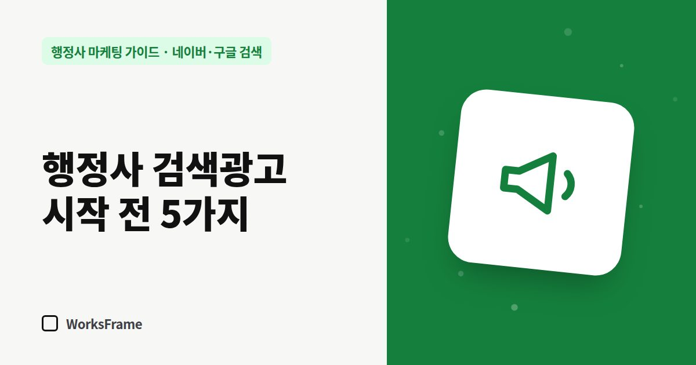

네이버·구글 검색
행정사 검색광고(파워링크) 시작 전에 알아둘 5가지
한 줄 답
검색광고는 클릭할 때마다 돈이 나갑니다. 업무별 안내 페이지를 먼저 만들고, 구체적인 키워드로 작게 시작해 ‘문의 1건에 든 비용’을 계산하세요.

검색광고는 돈을 내면 바로 검색 결과 위쪽에 보이게 해 줍니다. 빠르지만, 준비 없이 켜면 클릭 비용만 나가고 문의는 안 오는 일이 흔합니다.
1. 클릭당 과금입니다
네이버 검색광고(파워링크)는 광고가 보이기만 해서는 돈이 나가지 않고 클릭할 때마다 과금됩니다. 전문 서비스 키워드는 클릭 단가가 높은 편입니다. 한 마케팅 업체의 2026년 4월 자료에는 경쟁이 센 법률 키워드의 모바일 상위 노출 클릭 단가가 5~10만 원, 세무 키워드가 1~5만 원으로 정리되어 있습니다. 행정사 키워드도 업무와 지역에 따라 차이가 크니, 광고 관리 화면의 예상 단가를 꼭 확인하세요.
2. 광고로 들어온 사람이 머무를 곳이 먼저입니다
광고를 누르고 들어온 페이지가 업무와 상관없는 첫 화면이면 바로 나갑니다. 업무별 안내 페이지를 먼저 만들고, 광고는 그 페이지로 연결하세요. (업무 안내 페이지 쓰는 법)
3. 넓은 키워드보다 구체적인 키워드
| 키워드 | 특징 |
|---|---|
| 행정사 | 비싸고 의도가 섞여 있음 |
| ○○시 행정사 | 지역 의도, 여전히 넓음 |
| ○○시 공장등록 대행 | 의도가 분명, 문의로 이어지기 쉬움 |
키워드 조합은 키워드 고르는 법을 참고하세요. 시험 준비생이 많이 찾는 “행정사 시험”, “행정사 연봉” 같은 말은 제외 키워드로 막아 두세요.
4. 작게 시작하고 기록하세요
- 하루 예산을 작게 정하고 2~4주 실험
- 광고로 온 문의 수를 따로 기록 (전화·카톡·폼)
- “문의 1건을 얻는 데 든 비용”을 계산 → 수임료와 비교
5. 광고는 끄면 멈춥니다
광고비는 멈추는 순간 유입도 멈춥니다. 광고로 급한 문의를 받으면서, 업무 안내 글처럼 쌓이는 입구를 함께 늘려야 장기적으로 광고비 의존도를 낮출 수 있습니다.
자주 묻는 질문
광고 대행을 맡기면 더 싸지나요?
대행 수수료 구조를 먼저 확인하세요. 광고비 대비 수수료인지, 고정 비용인지, 성과 보고를 어떻게 하는지 계약 전에 물어보는 게 좋습니다.
개업하자마자 광고를 해도 되나요?
홈페이지·플레이스가 준비되어 있다면 소액 실험은 괜찮습니다. 준비 전이라면 창구부터 만드세요.